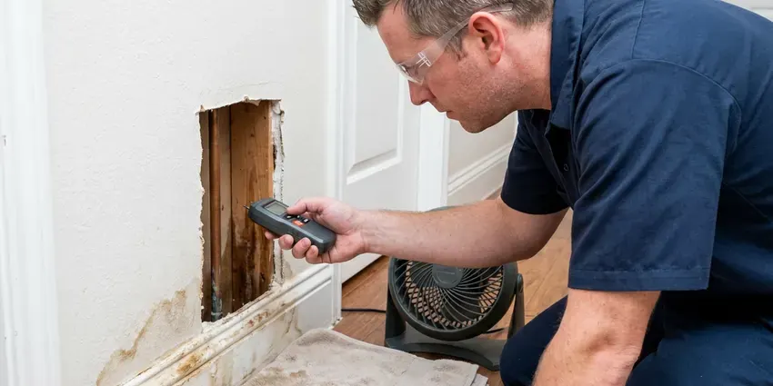

Water Line Repair in Liberty, MO
A water bill that doubled for no reason usually points underground. Our plumbers test the line and give you a written price in Liberty, MO.
- Fully Stocked Service Trucks
- Utilities marked before we dig
- Trenchless Pulls Available
- Licensed Plumbers

Get Your Water Pressure Back in Liberty, MO
Nothing gets dug until you approve a written price.
Fixing Water Lines in Liberty, MO With One Small Dig
FGV Plumbing fixes water lines that broke at the meter coupling, under the driveway and right where the pipe enters the slab. Every repair is done to code. We pressure test the new section before backfilling, flush the line so sediment does not land in your faucet aerators, and leave the yard graded back the way we found it.
Our expertise includes:
- Line tracing and depth locating before excavation
- Trenchless pipe pulling for buried mains
- Acoustic listening leak detection

Additional Plumbing Maintenance Services in Liberty, MO
Our maintenance and specialty plumbing services in Liberty, MO protect your home year-round and extend the life of every system.


Customers
Why Choose FGV Plumbing for Water Line Repair in Liberty, MO?
Every truck carries 3/4 inch and 1 inch pipe in copper, PEX and poly, plus repair couplings and curb-stop parts. A trip to the supply house can burn half a day. Having the material on hand means the trench gets opened, repaired, tested and closed on the same trip for the majority of calls.
- Clean Backfill, Soil is tamped in layers so the patch does not sink after the first rain.
- Right Materials, New sections go in with Type K copper, PEX or HDPE rated for direct burial.
- Stocked Trucks, Fittings for copper, galvanized, poly and PEX ride on every truck, so most jobs finish in one trip.
Citywide Coverage
From apartments with a shared meter to single-family homes on a corner lot, we work across all of Liberty and the nearby towns. Shared meters take a little more detective work. We isolate each branch to find which line is leaking, before anyone has to pick up a shovel.
Experienced Team
The FGV Plumbing crew works to the Missouri plumbing code on every repair. Approved fittings only. They pull permits when a job needs one, and they leave the trench ready for the inspector instead of buried before anyone looks.
Safety-First Approach
We call 811 before every dig so gas, electric and fiber lines get marked. We do it every single time. Hand digging is used near any marked line, and the trench is kept open only as long as the repair needs.
Trusted Certified Liberty Plumbing Services Professionals
At FGV Plumbing, we take pride in licensed, certified plumbing services throughout Liberty, MO. Those papers on the wall mean something. Our plumbers hold recognized industry credentials, and they follow strict safety and quality rules on every repair, installation and maintenance call we run.
Call Us Now PHCC Plumbing Contractor Recognition
PHCC Plumbing Contractor Recognition Better Business Bureau (BBB) Accreditation
Better Business Bureau (BBB) Accreditation Angi Certified Pro
Angi Certified Pro ISO 9001 Quality Management Certification
ISO 9001 Quality Management CertificationBuried Water Line Work in Liberty, MO
Trenchless Water Line Repair in Liberty
Trenchless work makes sense when the line runs under a driveway, patio or a row of mature shrubs. We dig a pit at the meter and another at the house. Then the new pipe gets pulled through underground. A pneumatic boring tool or a cable puller drags HDPE or PEX through the soil, or through the old pipe if it is a straight run, and most jobs wrap up in a single day.

Repair vs. Replace Your Water Line in Liberty, MO
One leak on a newer copper or PEX line is a spot repair. Two or more leaks on galvanized is a replacement. Age matters too, since most service lines past 40 years old are living on borrowed time. Spot repairs often run a few hundred dollars while a full replacement costs more and resets the clock for decades. You see the cut-out section yourself.
Underground Water Line Leak Repair in Liberty
Underground leaks hide well. Many people find out from the bill before they see anything in the yard. Others notice a patch of grass that grows greener than the rest, or ground that stays soft long after the sprinklers shut off. We confirm the leak at the meter, trace the pipe route and listen along it. We dig where the noise is loudest.
Galvanized Pipe Water Line Repair in Liberty, MO
Galvanized steel service lines rust from the inside out. Once one spot leaks, the pipe on either side is usually just as thin. We can clamp or replace a short section to get you through, which can hold for a while if the pipe is not too far gone. More often we recommend replacing the whole run from the meter to the house with copper or PEX. You get your flow back as a bonus.
PEX Water Line Repair in Liberty, MO
PEX itself rarely fails underground, but the joints and the first few feet near the house take a beating. Rodents chew it. A shovel or a fence post auger can nick it, and sunlight exposure before burial weakens the plastic over time. We cut out the damaged section and install new pipe with crimp, clamp or expansion fittings, matched to the PEX brand already in the ground.
Main Water Line Replacement in Liberty, MO
Replacement beats repair once a line has leaked two or three times, or when it is galvanized or polybutylene. Patches on those materials rarely hold. We run new Type K copper or PEX from the meter to the house, typically finishing in one day whether we trench or pull the pipe. We pull the permit, set up the inspection and pressure test the new line before it is covered.
Main Water Line Leak Repair in Liberty
A meter that moves with every fixture off is the clearest sign you have. We confirm it in about ten minutes. The house shutoff gets closed, the dial gets watched, and continued movement tells us the leak is in the buried line. Ground microphones find the spot. A repair coupling or a new length of pipe goes in, and then we pressure test it.

Commercial Water Line Repair in Liberty, MO
Commercial service lines are often 1 1/2 to 4 inch pipe feeding a meter bank, a backflow assembly and sometimes a fire line. No water means no open sign. FGV Plumbing can schedule repairs early in the morning or after closing, with large-diameter couplings and fittings already loaded. We also arrange the backflow test and inspection that most water providers require after work on the commercial side of the meter.
Water Line Repair Near Me in Liberty, MO
Close by matters most at two in the morning. Our phones are answered after hours. A plumber with a curb key and a pump can be on the way to most of Liberty fast, after which the permanent repair can wait for morning if that is easier for you.
Searching "water line repair near me" in Liberty, MO usually means water is coming up somewhere it should not. FGV Plumbing runs trucks out of the area, so a plumber can often be standing at your meter the same day you call. We bring the parts with us. That cuts out the extra trip to the supply house that drags a one-day repair into two.
FGV Plumbing at a Glance
- Fully licensed plumbing team covering Liberty, MO
- 24/7 emergency service with same-day scheduling
- Clear written estimates, no hidden fees
- 4.9-star rated by 307+ Missouri customers
Liberty Map
Liberty Information
- Population
- 30,794
- Area codes
- Local
- Service area
- Liberty and towns within a 40 mile drive
- Nearby
- Kansas City, Independence, Blue Springs, Lee's Summit
Most service lines in Liberty, MO fail at a fitting, not in the middle of a pipe run, so a good locate saves you from digging up the whole yard.
Expert Services
Reach out to FGV Plumbing for honest, reliable plumbing from people who know the trade in Liberty, MO.
Our Specialized Plumbing Services in Liberty, MO
At FGV Plumbing, you get every kind of plumbing service from one company across Liberty, MO. We go from leak detection all the way to full system installations, for homes and commercial buildings, and we do it quickly at a fair price. Explore our core services below:


What Happens on a Water Line Job in Liberty, MO
Expect a meter test, a locate, a written price and then the repair, most often on the same day.
Schedule a Visit
Call (816) 330-2338 and we will book a licensed plumber, often for the same day. Shut the main if water is surfacing.
Written Quote
We locate the leak and give you a written price for a spot repair or a full replacement. You choose.
Repair and Restore
We expose the pipe, fix it and test it. Then we backfill in layers and tidy the yard.
Frequently Asked Questions About Water Line Repair in Liberty
Price depends mostly on depth, access and pipe material. A shallow spot repair is cheap. Most single-leak repairs land between $300 and $800, while a full main line replacement can run $1,500 to $6,000 or more depending on length and what sits on top of the pipe. You get a written estimate after we locate the leak.
Keep trees and shrubs with big roots well away from the line. Mark the pipe route somewhere. Hard freezes happen every winter in Missouri, and the northern part of the state usually sees longer cold spells than the south. A pressure gauge on a hose bib tells you if the regulator is failing, and anything over 80 psi is worth fixing before it starts wearing on the line. On galvanized lines, budgeting for a new line is cheaper than an emergency.
Most replacements get Type K copper or PEX. For pulled lines we use HDPE. Copper lasts a very long time and resists punctures, while PEX handles ground movement and freezing better and costs less to install. We recommend one based on your soil, line length, budget and what your local code allows in Liberty.
It means replacing the buried line without digging a trench along it. You get two pits instead of a trench. A boring tool or pipe puller drags new HDPE or PEX between them, by splitting the old line in place or boring a new path next to it. It is a good fit for lines under driveways, patios and established gardens in Liberty.
In most places the water provider owns the meter and the pipe on the street side of it. You own the rest. Some providers draw the line at the curb stop instead, so before quoting we check exactly where the leak is. If it turns out to be theirs, we tell you and help you report it.
Groundwater from limestone areas is especially mineral-heavy, which makes softeners and regular water heater flushing worthwhile. Basements are common in many areas, so sump pumps and foundation drainage are an important part of keeping homes dry. Tree roots wrap and crush shallow lines over time, and scale inside older pipe slowly narrows the opening until pressure drops and the wall gives out. Old galvanized is the top culprit.
Yes, we stand behind it. A failed joint gets fixed at no charge. The workmanship warranty covers our labor on the repaired section, while the pipe and fittings carry their maker's warranty on top. All of it is listed on the service agreement you sign before we start.
Yes. Our workmanship is covered. New pipe and fittings also carry the manufacturer warranty, which on some PEX and HDPE products runs 25 years or longer. The written estimate spells out the coverage term before work begins, so there is no guessing later about what is included for our Liberty customers.
What Our Customers Say About Our Plumbing Experts

Laura S.
Our 40 gallon tank started leaking from the bottom after thirteen years. The tech hauled the old one out, set a new unit with a fresh expansion tank, and had hot water running in about four hours. He took the old tank with him too.
Water Heater Replacement · Independence, MOJessica T.
We were adding a gas range in a kitchen remodel and needed a new line run from the meter. The plumber pulled the permit, ran the pipe through the crawl space, and had it inspected and approved within the week.
Gas Line Repair · St. Joseph, MOMonica A.
Our water bill nearly doubled in one month with no change in how we used water. The tech checked the meter, heard the leak under the hallway with his equipment, and opened a hole about a foot square. Fixed the same day.
Slab Leak Repair · Independence, MO
Angela D.
Our sump pump quit during a storm and the water was an inch from the basement carpet. FGV Plumbing put in a new pump with a battery backup that same evening. We have had two heavy rains since. It kicked on both times.
Sump Pump · Kansas City, MO
Marcus H.
Grease from the fryer line kept clogging the kitchen drain at my diner. FGV Plumbing hydro jetted the line after closing, showed me the buildup on camera, and set us up on a quarterly cleaning so it does not catch us on a Friday again.
Drain Cleaning · Lee's Summit, MO
Carlos V.
Our house still had galvanized pipe, and upstairs the shower was a trickle. The crew repiped everything in PEX over three days and patched every drywall hole before they left. The pressure difference is night and day.
Repiping · Kansas City, MO